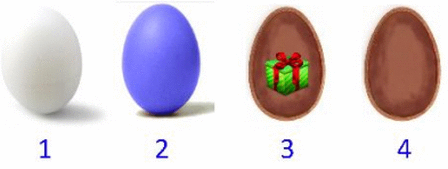

Castor a trouvé des œufs de Pâques. Les deux premiers œufs sont encore fermés : il peut voir la couleur de leur coquille, mais il ne peut pas savoir s'il y a un cadeau à l'intérieur sans les ouvrir. Les deux suivants sont ouverts : il peut voir s'il y a un cadeau à l'intérieur, mais il ne peut pas voir la couleur de l'extérieur de leur coquille sans les retourner.
Castor suspecte que si un œuf a une coquille bleue alors il contient un cadeau.
Cochez la ou les actions qui sont indispensables pour déterminer si sa théorie est vraie.
Il s'agit de trouver quelles actions sont nécessaires pour vérifier si l'implication logique si un œuf a une coquille bleue alors il contient un cadeau est vraie. Considérons les actions une par une.
En résumé, il faut ouvrir l'œuf no 2 et retourner l'œuf no 4.
La logique joue un rôle important en informatique, en particulier pour raisonner sur les programmes. Par exemple, on peut utiliser des raisonnements logiques pour prouver mathématiquement qu'un programme ne contient pas de bugs.
Ainsi, lorsqu'on veut prouver qu'un programme calcule la valeur absolue d'un nombre entier, on doit entre autres choses prouver que l'implication logique "si le nombre considéré est négatif alors le programme calcule la valeur opposée de ce nombre" est vraie.